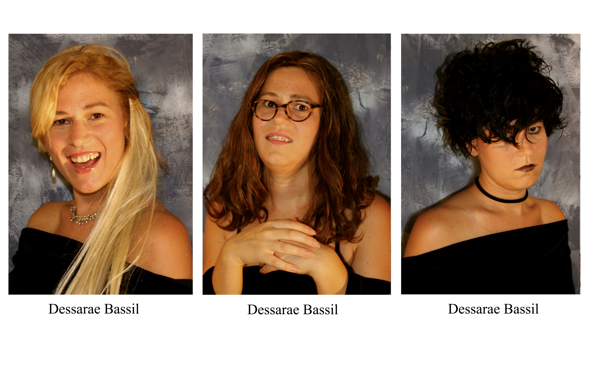

about

My work is a way of using fragments of pop cultural things from my formative years in the 80’s and 90’s to heal past trauma. It’s also about a mind/body disconnect and the sexualization of young girls. I paint, draw, and piece together cartoonish images of things I don’t like in a way that references things I love in order to express and reclaim my physical, embodied experience.
***I run a community space/gallery in Gainesville, FL called Moisturizer Gallery.
Website: moisturizer.gallery and IG: moisturizer.gallery
Contact me at moisturizer.gallery@gmail.com